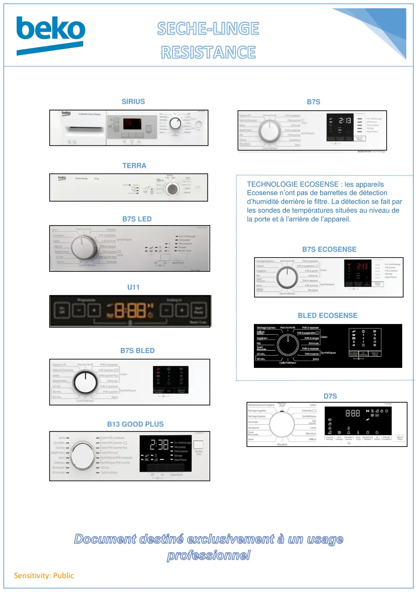

Seche linge Resistance

Sensitivity: PublicSIRIUSTERRAB7S LEDU11B7S BLEDB13 GOOD PLUSBLED ECOSENSEB7STECHNOLOGIE ECOSENSE : les appareilsEcosense n’ont pas de barrettes de détectiond’humidité derrière le filtre. La détection se fait parles sondes de températures situées au niveau dela porte et à l’arrière de l’appareil.B7S ECOSENSED7S
1 / 1Liens de ce document (10)
PDFProgrTest.seche linge LCD DCU833x 933x Fr8 p.PDFProgrTest seche linge TERRA Fr21 p.PDFMode Test Afficheur Leds Condenseur2 p.PDFProgr.Test.F seche linge.U11 DCU8430x6 p.PDFProg Test seche linge Condenseur B7S BLED2 p.PDFProg Test seche linge Beko Condenseur Afficheur Digital2 p.PDFProg Test Condenseur Ecosense BLED2 p.PDFProg Test seche linge B7S Condenseur3 p.PDFProg Test seche linge Condenseur Ecosense B7S2 p.PDFProgTest seche linge Condenseur D7S3 p.